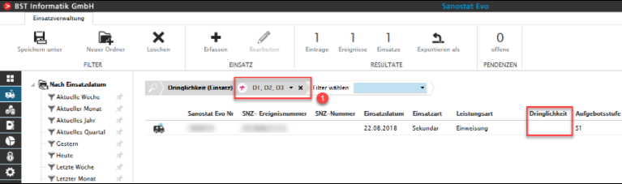
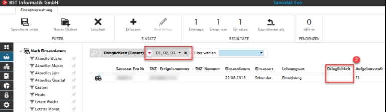

Leer-Einträge in ComboBoxen
Wir erklären Ihnen am Beispiel von 'Dringlichkeit ohne Eintrag', wie Sie in ComboBoxen und MultiSelectionBoxen Leer-Einträge finden.
Auswahl Filterkriterium 'Dringlichkeit (Einsatz)' D1, D2, D3 (1)

Alle Einsätze ohne Dringlichkeit werden aufgelistet (2)
